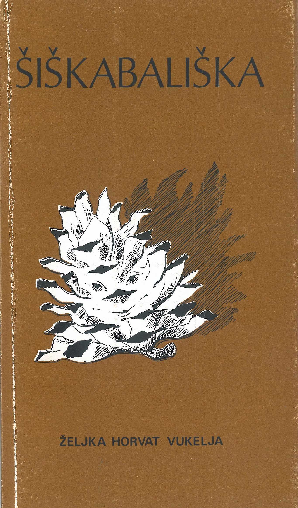

Objavljena djela

Šiškabališka
Narodno sveučilište "Juraj Kokot", Velika Gorica, 1984.
Zbirka kratkih priča.

Poplava iz šalice kave
Školska knjiga, 1988.
Hirovita, razmažena djevojčica gnjavi svoju mamu i tako u običnoj šalici bijele kave izazove strašnu poplavu.

Balončica
Školska knjiga; prvo izdanje: Mladost, 1990.
Kako je djevojčica Maša, koja ne jede ništa osim pokojeg slanog štapića i bombona, završila u oblacima, među pticama.

Hrabrica
Školska knjiga; prvo izdanje: Mladost, 1990.
Tko je pomogao Perici da napokon riješi najveći problem svog života i nauči voziti bicikl.

Panjoglav
Mladost, 1990.
Što se sve može dogoditi kad netko uporno ne pere uši.